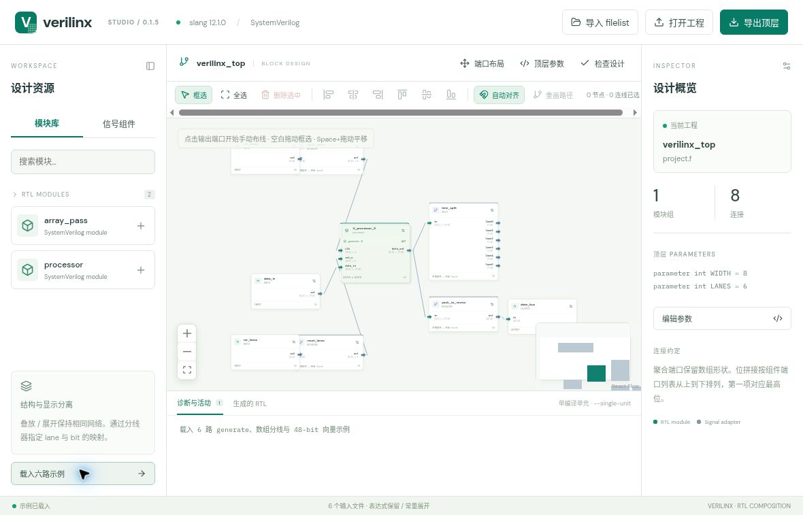

让 RTL 模块连接，
变得清晰。
从一个 filelist 开始，用参数、generate 和信号适配器搭建设计。由 slang 解析真实端口，顶层文件就是完整工程。

下载后，只需这三步。
tar -xzf verilinx-linux-x86_64-0.1.5.tar.gz cd verilinx-linux-x86_64 ./verilinx
保持终端运行，浏览器打开 http://127.0.0.1:3000/；Ctrl+C 停止。完整 Linux 说明 ↗
每一个转折，由你决定。
0.1.5 已移除独立检视版，只维护主画布。Git 克隆与热更新开发指南见下方。
点击输出端口开始，逐次单击画布放置转折点，再点击输入端口完成。Backspace 撤回，Esc 取消；选中线还可拖动转折点或重新绘制。
不自动寻找绕行路径。模块绝对坐标、端口位置和每条线的全部转折点，都编码进顶层文件注释。打开工程，原样恢复。
本版本通过 22 项后端、19 项前端回归，并在无 Python / Node 的 Debian 11 容器通过原生自检。
克隆源码，持续开发。
需要 Git、Python 3.12+、Node.js 20.19+ 和 npm。适合经常修改源码、保存自己的开发提交并同步新版本。
git clone --branch main https://github.com/SuperiorLQF/verilinx.git cd verilinx git switch -c dev/my-work
首次安装
python3.12 -m venv .venv .venv/bin/python -m pip install -r requirements-dev.txt npm --prefix frontend ci
两个终端，自动更新
终端一启动后端（在仓库根目录）：
.venv/bin/python -m uvicorn backend.main:app --host 127.0.0.1 --port 3000 --reload --reload-dir backend
终端二启动前端（同样在仓库根目录）：
npm --prefix frontend run dev -- --port 5173 --strictPort
在运行服务的同一台电脑打开 http://127.0.0.1:5173/。修改前端热更新，修改后端自动重启。源码仓库不包含构建产物；开发时访问 5173，使用 3000 构建版需要先执行 build。
先在开发分支提交本地修改，再执行 git fetch origin 和 git merge origin/main。只跟踪 main、没有本地开发提交且工作区干净时，可用 git pull --ff-only。
原生 slang filelist 和单编译单元。参数在顶层上下文求值，再分析实例端口。
generate 叠放与展开，配合 split、concat、reshape 处理 lane 与位映射。
源文件快照、嵌套 filelist、参数、网络与布局一并编码进专属注释区。
其他下载与文档
Git clone 源码开发已有 Python 安装：代码更新包源码完整包（需 Python）Linux 发行分支开发文档此页面是发行下载站。完整编辑器在本机运行；GitHub Pages 不运行 slang 后端。Linux 发行分支仅含运行包和说明；公开仓库中的分支也公开，不能作为私有源码仓库。